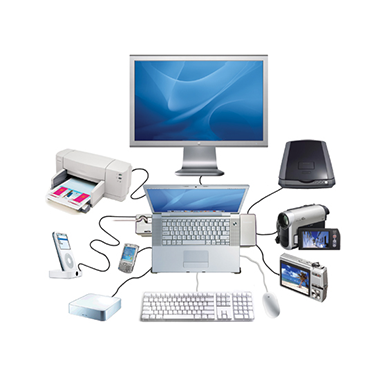

Se denomina periféricos a los aparatos y/o dispositivos auxiliares e independientes conectados a él CPU (unidad central de procesamiento) de una computadora. A través de los periféricos la computadora se comunica con el mundo exterior.
A pesar de que el término periférico implica a menudo el concepto de "adicional pero no esencial", muchos de ellos son elementos fundamentales para un sistema informático. El teclado y el monitor, imprescindibles en cualquier computadora personal de hoy en día (no lo fueron en los primeros computadores), son posiblemente los periféricos más comunes, y es posible que mucha gente no los considere como tal debido a que generalmente se toman como parte necesaria de una computadora.

EL TECLADO
Un teclado es un periférico de entrada que permite introducir órdenes y/o datos a la computadora o dispositivo digital. El teclado se conecta al computador por medio de un puerto serial o al USB. Básicamente el teclado esta compuesto por un grupo de teclas, similares a las de una máquina de escribir, correspondiendo cada tecla a uno o varios caracteres, funciones u órdenes.
El MOUSE
Un mouse normalmente consta de dos botones: un botón primario (normalmente el botón izquierdo) y un botón secundario (normalmente el botón derecho). El botón primario es el que se utiliza con mayor frecuencia. La mayoría de los mouse también incluyen una rueda de desplazamiento entre los botones que le ayuda a desplazarsepor los documentos y las páginas web de un modo más fácil. En algunos mouse, la rueda de desplazamiento puede presionarse y actuar así como un tercer botón. Los mouse avanzados pueden disponer de botones adicionales que sirven para realizar otras funciones.
LOS PARLANTES
Son la vía de salida de los sonidos (voz, música, efectos sonoros, ruidos) generados en el computador, mas especificamente por la tarjeta de sonido, Se conectan en la parte posterior de la torre del computador y funcionan como los parlantes convencionales. Hay muchos modelos de parlantes, estan los basicos con dos altavoces y otros mas avanzados que cuentan con sonido envolvente, surround, sobwofer, sistemas de 2.1, 4.1, 5.1, 6.1, 7.1 canales entre otros. También es posible conectar auriculares al computador.
IMPRESORAS
Una impresora es un dispositivo periférico del ordenador que permite producir una gama permanente de textos o gráficos de documentos almacenados en un formato electrónico, imprimiéndolos en medios físicos, normalmente en papel, utilizando cartuchos de tinta o tecnología láser.
Muchas impresoras son usadas como periféricos, y están permanentemente unidas al ordenador por un cable. Otras impresoras, llamadas impresoras de red, tienen una interfaz de red interno (típicamente wireless o ethernet), y que puede servir como un dispositivo para imprimir en papel algún documento para cualquier usuario de la red.
CÁMARA WEB
Una cámara web o cámara de red (en inglés: webcam) es una pequeña cámara digital conectada a una computadora la cual puede capturar imágenes y transmitirlas a través de Internet, ya sea a una página web o a otra u otras computadoras de forma privada.
Las cámaras web necesitan una computadora para transmitir las imágenes. Sin embargo, existen otras cámaras autónomas que tan sólo necesitan un punto de acceso a la red informática, bien sea ethernet o inalámbrico. Para diferenciarlas las cámaras web se las denomina cámaras de red.